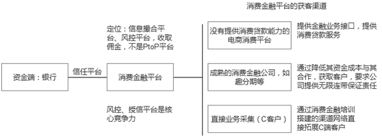

公司简介
C
ompany cverview
Company Profile
乾康金融信息服务股份有限公司
乾康(上海)金融信息服务股份有限公司是一家专注于金融领域专业管理咨询以及运营实施的服务机构。公司的主营业务是为银行等金融机构提供微小贷款和信用卡业务的咨询及运营、人力资源管理、新产品创新等咨询服务。经营模式
B
usiness model
一、微小贷款业务咨询、运营
乾康公司的微小贷款咨询运营业务是基于IPC微贷应用技术，总结多家银行小微贷业务运营中的先进实战经验，在此基础上，经过深入研究、总结提炼，形成独具本土特色的，涵盖客户识别、风险控制、全流程管理的乾康小微贷款业务体系。
乾康公司创新了客户经理分层管理体系、客户网络化维护模式、以及高效的绩效评估考核办法、责任清晰奖惩准确的责任管理体系。
二、信用卡业务咨询、运营
信用卡业务综合发展策略咨询：对银行所在经营区域以及业务发展现状进行细致分析，综合解析符合本行实际的信用卡综合业务发展战略内容。建立具有自身特色的、目标明晰的、安全可行的信用卡业务发展战略。通过对实施计划与发展战略的配合实现计划探讨，明确具体实行方案，并得到行高层全各方位的资源支持与配合。
信用卡管理架构、业务流程设计咨询：帮助银行建立或重造信用卡各个管理职能环节，使银行从信用卡中心的管理架构到管理操作流程均得到较好的优化，帮助银行合理配置管理资源，较好的符合相关管理要求和防范各管理环节风险，以达到提升银行的信用卡综合管理水平的目的。
信用卡业务产品创新设计咨询：信用卡综合产品内涵设计、品牌以及主打产品设计、信用卡以及IC应用功能设计、个人消费微贷产品设计、多特色产品综合设计、各项产品相关业务流程设计。
信用卡业务综合风险管理策略咨询：帮助银行建立较完善的风险防控体系，即对信用卡业务的审核、审批、授信、催收等各个主要风险管理关键点进行系统化的风控建设，协助银行做好相关责任机制和监测手段的建设，以达到综合提高整体信用卡业务风险防控能力的目标要求。
信用卡中心管理人员与直营团队培养咨询：在完善管理体系的基础上针对体系内各个岗位的需求为银行进行专业化人才的招募、考核、专业培训、市场适应锻炼、业务模拟运营、业务运作指导等，以充分满足管理与发展的人才需求。
综合运营战略合作咨询：在包含上述五项咨询的基础上进一步进行实施咨询即与银行共享收益，负责咨询效果的实现，收益来自于确保银行取得稳定业务增长。

三、个人金融业务管理和营销能力培养
乾康(上海)提高金融业务核心竞争力及可持续发展能力，保证个人金融业务的全面开展及顺利进行，培养一支具有独立开展业务、有效控制风险、深入开拓市场、出色完成业绩的高素质核心队伍。


公司简介
C
ompany cverview
Company Profile
乾康信息技术有限公司
乾康信息技术有限公司秉承技术推进业务的理念，基于乾康集团先进的个人金融业务体系，以强大的技术团队力量、前沿的实现技术和大数据挖掘分析能力、建模能力，专注于金融领域的系统、平台研发和业务平台运营。软件著作权
C
ompany cverview

乾康客户经理手持终端
营销管理软件V1.0
乾康金融授信评估
平台软件V1.0

乾康个人金融业务系统
管理软件V1.0
乾康小微贷款
管理软件V1.0
乾康自助设备管理
平台软件V1.0
乾康银行自助设备管理
平台软件V1.0
乾康金融授信评估
模式软件V1.0
云金融网银系统后台操作
平台软件V1.0
公司简介
C
ompany cverview
Company Profile
乾康金服（北京）信息技术有限公司
乾康金服（北京）信息技术有限公司（以下简称“亁康金服”）成立于2016年1月18日，由乾康（上海）金融信息服务股份有限公司（以下简称“乾康集团”）投资控股，是互联网银行和消费金融领域，专注于技术、风控平台的金融服务机构。乾康集团是专注于金融领域专业管理咨询以及运营实施的服务机构，公司的主营业务是为银行等金融机构提供微小贷款和信用卡业务的咨询及运营、人力资源管理、新产品创新等咨询服务以及协助实现银行互联网金融平台建设----金融 OTO 商业模式服务平台。
乾康集团发展历程
D
evelopment path
乾康金服基于消费金融、供应链金融、小微贷款等银行授信业务，研究开发风险控制平台，为银行提供借款人风险评估和审核、标准产品设计服务，为个人客户提供信用评估服务。除平台业务外，2016年3月16日，中国互联网金融研究院批准乾康金服成立“中国互联网金融研究院消费金融研究中心”，以规范消费金融业务的操作标准为宗旨，协助银行进入消费金融蓝海行业，培养消费金融人才，设立“消费金融管理师”职业培训项目。
乾康金服成立伊始就将零售金融作为业务发展重点，在早期的小微贷和信用卡业务中，消费类金融业务占据重要比重，积累了相当丰富的市场营销、业务运营和风控反欺诈能力。
由于金额更小，审批更快，期限更短的消费金融业务对从业者提出了更加严格甚至苛刻的要求和门槛，乾康金服早在2013年就开始业务布局，积聚相关专业人才，研发相关核心技术，如渠道获客技术、风控与反欺诈技术等等。
乾康金服目前已经拥有近五十人的消费金融专业团队，其中有来自国内外一线商业银行、消费金融公司的核心骨干，也有在相关专业咨询服务公司持续从业消费金融十几年的资深顾问。
我们的消费金融技术团队已经研发成功一系列消费金融系统产品，包括渠道端系统、营销类系统、审批及风控类系统、支付清算平台、资产催收及呼叫中心等等，这些软件产品已经在金融机构获得广泛应用与验证。
乾康集团有全国50余家城商行、农商行资源等；有超过5年的银行贷款风险控制经验，为20余家银行提供了小微贷款和信用卡业务的咨询运营服务，教授银行小微客户的识别方法和风控方法，形成了一套自己的客户识别系统和授信评估模型；乾康金服风险控制团队均有丰富的贷款、信用卡、消费金融风控经验。银行通过乾康金服供应链融资平台，可以将贷款的风险控制前置，并节约运营成本和相应的人力成本，成本的下降能够带来更大的利润空间，因此银行非常乐于与乾康金服合作。
业务介绍
B
usiness
1.互联网银行咨询
亁康金服根据自身技术和业务优势，组织团队，向银行提供互联网银行开办、运营咨询服务，目前已与某农商银行签约执行咨询服务。
2.消费金融业务咨询
亁康金服向银行提供消费金融业务咨询，咨询内容包括消费金融业务梳理、业务规范制度建设、应用场景设计、人员招聘培训、消费金融系统开发、业务运营等。
3.消费金融管理师培训
面向社会、金融机构、消费金融公司及平台等消费金融从业人员，提供《消费金融管理师》培训，目前开设有高级研讨班和中级管理师培训班，计划在6月开立网络培训班。
《消费金融管理师》第一期培训班于4月9日－4月13日在北京开设，第二期培训班与5月底在岑溪开设。
4.风控平台业务
亁康金服将自己的渠道资产资源和银行资金资源进行整合，通过风控平台将资金和资产进行撮合，提供风险控制服务。目前涉及业务为消费金融、小微贷款、供应链金融等。消费金融业务逻辑如下：
5.创立消费金融联盟
亁康金服利用自身资源优势，作为中国互联网金融研究院消费金融中心的承办单位，正积极筹备创立消费金融联盟，为消费金融公司、金融机构等提供业务交流探讨、消费金融市场研究分析等服务。

 中文
中文 ENGLISH
ENGLISH
Copyright(C)2011-2014 乾康（上海）金融信息服务股份有限公司
沪ICP备13043724号